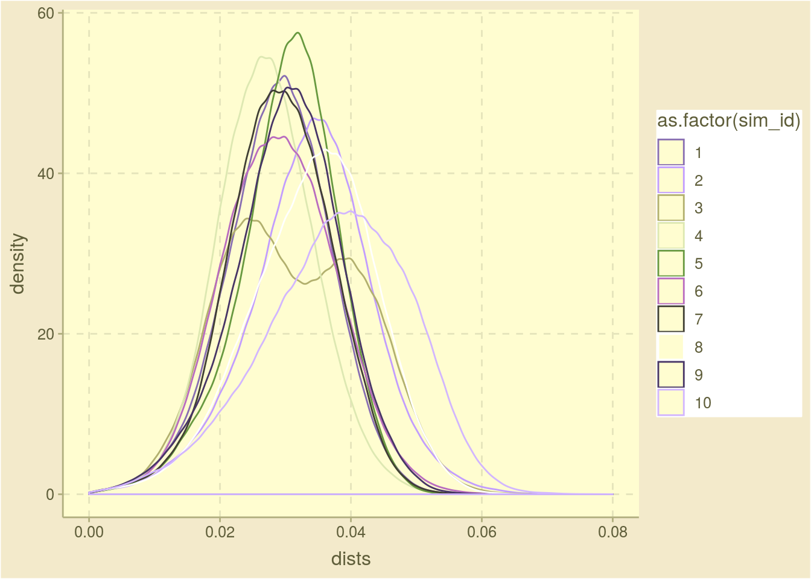

3 Small number of simulations
The goal is to compare different simulations to each other. First, we will start with a small number of simulations that we can still pay attention to each individual simulation. Note that here we only consider simulations performed with similar parameters since comparisons based on small number of examples for stochastic processes can be very misleading. The idea is just to expand the chunk that showcases a single simulation by adding in extra density curves and extra rows into the tables.
The following tables show some summary metrics for 10 simulations.

Figure 3.1: Density plot of the pariwise distances in the last generation
| Sim | 0% | 10% | 20% | 30% | 40% | 50% | 60% | 70% | 80% | 90% | 100% |
|---|---|---|---|---|---|---|---|---|---|---|---|
| 1 | 0 | 0.020 | 0.024 | 0.028 | 0.030 | 0.032 | 0.034 | 0.036 | 0.040 | 0.044 | 0.066 |
| 2 | 0 | 0.018 | 0.022 | 0.024 | 0.026 | 0.028 | 0.030 | 0.032 | 0.034 | 0.036 | 0.060 |
| 3 | 0 | 0.020 | 0.026 | 0.028 | 0.032 | 0.034 | 0.036 | 0.038 | 0.042 | 0.046 | 0.074 |
| 4 | 0 | 0.018 | 0.022 | 0.024 | 0.026 | 0.028 | 0.030 | 0.032 | 0.034 | 0.038 | 0.060 |
| 5 | 0 | 0.020 | 0.024 | 0.028 | 0.030 | 0.032 | 0.034 | 0.036 | 0.040 | 0.042 | 0.066 |
| 6 | 0 | 0.020 | 0.024 | 0.026 | 0.028 | 0.032 | 0.034 | 0.036 | 0.038 | 0.042 | 0.064 |
| 7 | 0 | 0.024 | 0.028 | 0.032 | 0.034 | 0.036 | 0.038 | 0.040 | 0.042 | 0.046 | 0.068 |
| 8 | 0 | 0.022 | 0.026 | 0.030 | 0.032 | 0.034 | 0.036 | 0.038 | 0.040 | 0.044 | 0.062 |
| 9 | 0 | 0.022 | 0.026 | 0.030 | 0.032 | 0.036 | 0.038 | 0.040 | 0.042 | 0.046 | 0.064 |
| 10 | 0 | 0.016 | 0.022 | 0.026 | 0.028 | 0.030 | 0.034 | 0.036 | 0.040 | 0.044 | 0.064 |
| Argument | Value |
|---|---|
| Number of Ancestors | 1 |
| Sequence Length | 500 |
| r0 | 2 |
| Number of Generations | 9 |
| Minimum Population Size | Inf |
| Mutator Function | mutator_uniform_fun |
| Mutator: mu | 0.001 |
| Fitness Evaluator | fitness_evaluator_uniform_fun |
| Additional Fitness Evaluator Arguments | None |
| Gen. Num. | n | Dist. to Ances. | Normalized Dist. | Fitness Score | Min. Fitness Score |
|---|---|---|---|---|---|
| 0 | 1 | 0.000000 | 0.0000000 | 0.1098777 | 0.1098777 |
| 1 | 2 | 0.500000 | 0.0010000 | 0.6686955 | 0.5075573 |
| 2 | 4 | 2.000000 | 0.0040000 | 0.4361287 | 0.0798639 |
| 3 | 8 | 3.125000 | 0.0062500 | 0.4950465 | 0.2126679 |
| 4 | 16 | 3.937500 | 0.0078750 | 0.3107525 | 0.0114728 |
| 5 | 32 | 4.843750 | 0.0096875 | 0.5159449 | 0.0039399 |
| 6 | 64 | 5.875000 | 0.0117500 | 0.4705996 | 0.0126542 |
| 7 | 128 | 6.859375 | 0.0137188 | 0.5372481 | 0.0019631 |
| 8 | 256 | 7.738281 | 0.0154766 | 0.5000161 | 0.0027895 |
| 9 | 512 | 8.832031 | 0.0176641 | 0.4918737 | 0.0023947 |